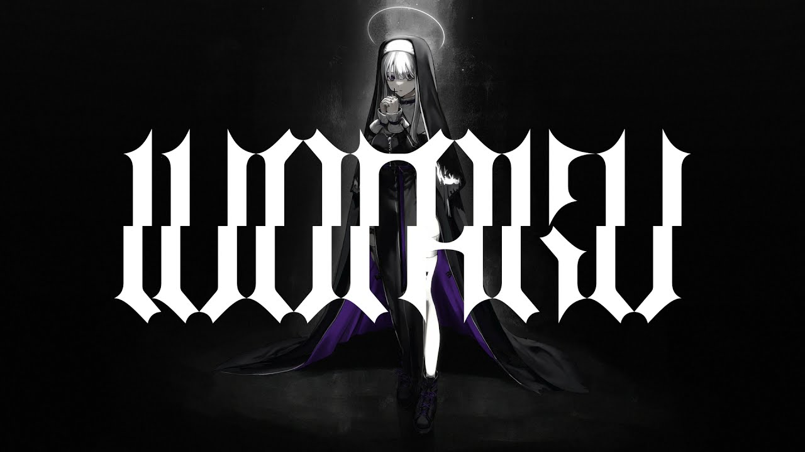

Wotaku
A Minor / 160.028PM
wotaku(Ft. SHIKI(Utaite)）が歌う「福音 (Gospel) (feat. SHIKI)」は、戦争、霊性、権力、救済の要素を織り交ぜたさまざまなテーマに取り組んでいます。歌詞では、過去の過ちを再現し繰り返すことに価値があるかどうか、その目的があるかどうかという問いに探求の余地があります。夢を見るよりも戦争に注力する方が良いとするラインがあります。この対比が戦争の破壊的な性質と歴史を繰り返すことの潜在的な無意味性を浮き彫りにしています。瞑想や唱えられることが嘲笑されるという言及は、伝統的な霊的実践の拒絶を意味しています。この歌は、互いに嘆き憐れむ人々がそうした実践で慰めを見いだせないかもしれないと示唆しているようです。
8128の規定を含む「Overview」と呼ばれる「骨董品」または古代の禁書の言及は、複雑で広範な知識の体系を指しています。歌詞には時間、空間、信仰、祈り、教義、救済などの要素が含まれており、これが包括的な知識が指導と救済を提供していると示唆しています。コーラスでは光と慈悲を呼び起こし、彼らの愛が導き、リードすることを望んでいます。これは知恵と理解が方向とサポートを提供することへの切望を伝えています。以下のヴァースでは、「福音」が貫かれ、神聖な指示が与えられるという概念が触れられています。強大な存在が灰にされ、論理が消えると歌詞にはあります。剣に象徴される悪を一掃する量子力が言及されており、これは正義と抑圧的な力を排除する願望を示しています。
歌はまた、元老院の燃焼と武器商人の露呈を描き、学生によるテロ行為の残虐性が増していることを強調しています。加害者と見物人の視点は鮮明な対比を示しており、一方からは天国のように見えるものが他方からは地獄のように見える可能性があることを示しています。これは状況の複雑さと曖昧さを浮かび上がらせています。最後に、歌詞は失望の念を表し、物事がこのようになるべきではなかったと嘆いています。奇跡と神の介入を求めることで、混乱と混沌の中で人々をより高い次元に引き上げ、指導を提供しようとしています。総じて、「福音 (Gospel) (feat. SHIKI)」は戦争、霊性、権力動態、そして逆境に直面しての指導と変容を探求するテーマに深く踏み込んでいます。破壊的なサイクルの批判を提供し、逆境に対する指導と変革への切望を表現しています。
The song "福音 (Gospel) (feat. SHIKI)" by wotaku (Ft. SHIKI (Utaite)) addresses various themes and concepts, weaving together elements of war, spirituality, power, and redemption. The lyrics explore the question of whether there is any value in reproducing and repeating past mistakes, asking if it serves any purpose. The lines suggest that instead of dreaming, it is better to focus on waging war. This juxtaposition highlights the destructive nature of war and the potential insignificance of repeating history. The mention of meditation and chanting being ridiculed implies a rejection of traditional spiritual practices. The song seems to suggest that those who lament and pity each other may not find solace in such practices.
The reference to an "antique" or ancient forbidden book called "Overview" with 8128 provisions indicates a complex and extensive body of knowledge. The lyrics describe the inclusion of various elements such as time, space, faith, prayer, doctrine, and salvation. It seems to suggest that this comprehensive knowledge offers guidance and salvation. The chorus invokes light and compassion, stating the desire for their love to guide and lead. It conveys a longing for wisdom and understanding to provide direction and support. The following verses touch upon the concept of the "Gospel" being pierced and the divine instructions being given. It mentions the powerful being reduced to ashes and the logic that disappears. The lyrics reference a quantum force that eradicates evil, symbolized by a sword. This indicates a desire for justice and the elimination of oppressive powers.
The song further describes the burning down of the Senate and the exposure of weapon merchants, emphasizing the increasing brutality of terrorist acts committed by students. The perspective of both perpetrators and observers reveals a stark contrast—what may seem heavenly from one side may appear hellish from another. This highlights the complexity and ambiguity of the situation. Lastly, the lyrics express a sense of disappointment, lamenting that things were not supposed to be this way. The plea for miracles and divine intervention aims to elevate people to a higher level and provide guidance amidst the confusion and chaos. Overall, "福音 (Gospel) (feat. SHIKI)" delves into themes of war, spirituality, power dynamics, and the quest for redemption. It offers a critique of destructive cycles and yearns for guidance and transformation in the face of adversity.